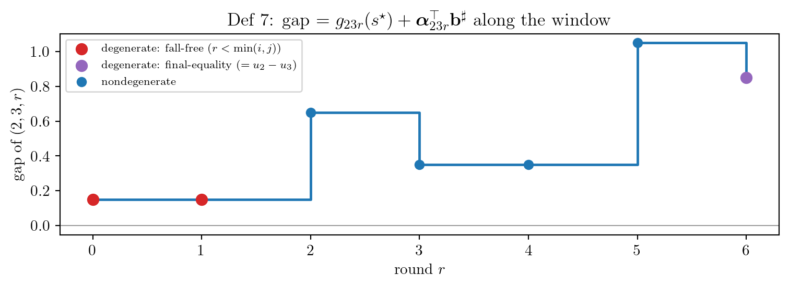
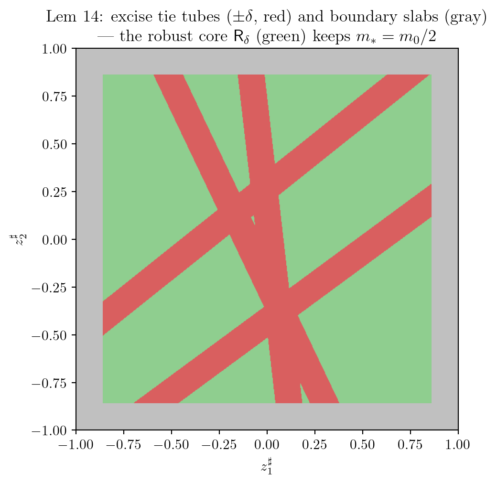
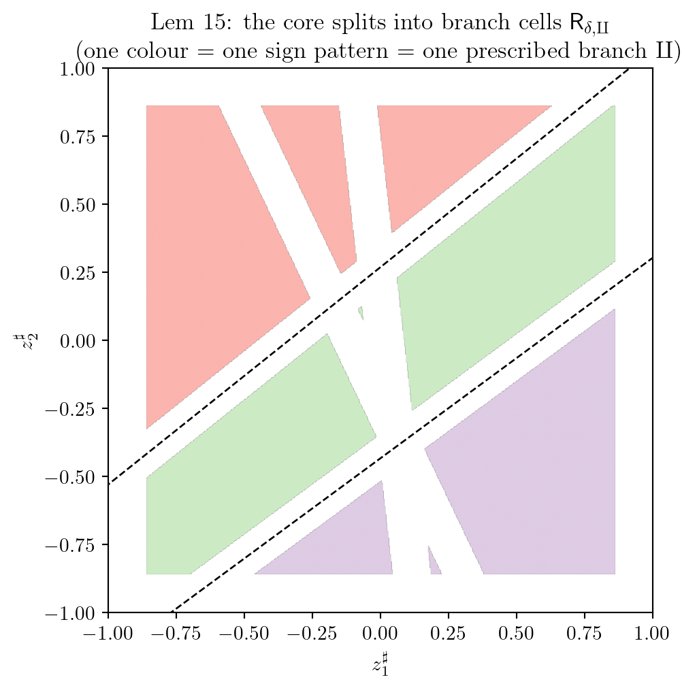
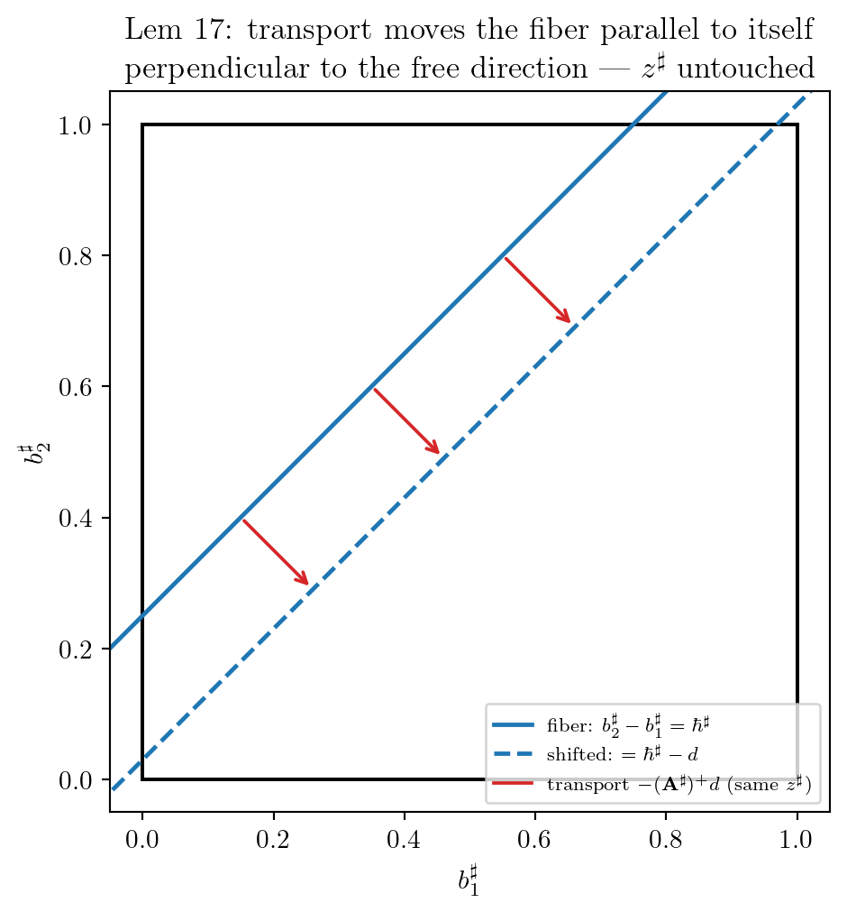
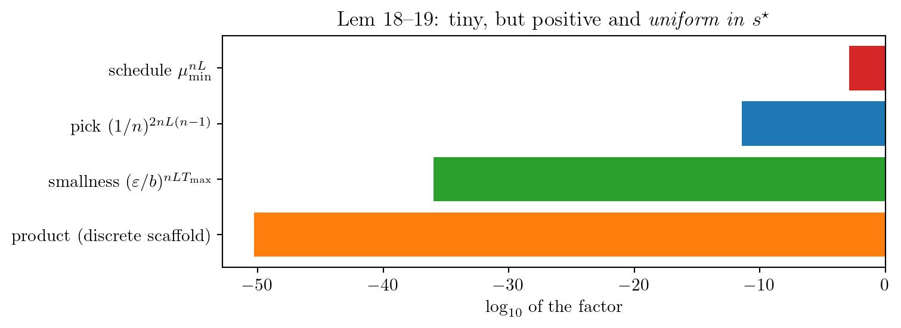

import numpy as np
import matplotlib.pyplot as plt
plt.rcParams.update({
"text.usetex": True,
"text.latex.preamble": r"\usepackage{amsmath}\usepackage{amssymb}",
"font.family": "serif",
"font.size": 11,
})연구 ▷ HST ▷ 작은 집합 만들기 (Def 7 – Lem 19) — 그림으로 보기
목표: sublevel set \(\mathsf{C}_0=\{s^{\star}:M(s^{\star})\leq M_0\}\) 가 small 임을, 즉 창 \(nL\) 라운드 뒤의 공통 바닥
\[ (P^{\star})^{nL}(s^{\star},\cdot)\;\geq\;\eta\,\mathrm{Unif}(\mathsf{U})\otimes\delta_{v_n} \qquad(\forall\,s^{\star}\in\mathsf{C}_0) \]
을 보이는 것 (Lemma 19). 이전 단계까지 확보된 것은 “낙하 하중 \(\mathbf{b}^{\sharp}\in[0,b]^{nL}\) 만으로 최종 높이차를 target \(\mathsf{K}\) 어디로든 slice 부피 바닥 \(m_0\) 을 갖고 보낼 수 있다”는 사실이다. 복권 분포가 요구하는 “walker 가 \(v_n\)” 은 flow 종료점이 아니라 terminal fall time \(t_{r+nL}\) 에 읽은 위치, 즉 마지막 낙하의 타겟이므로, cyclic 스케줄 \(v_1,\ldots,v_n\) (마지막 낙하가 \(v_n\)) 에 조건을 걸면 확률 \(\mu_{\min}^{nL}\) 로 그냥 달성된다 — walk 을 통제하는 문제가 아니다. Def 7 – Lem 19 가 실제로 채우는 것은, walker 가 밟는 경로(non-fall 눈이 그 위에 쌓여 \(\mathbf{A}^{\flat}_{\amalg}\) 로 높이차를 흔듦)를 하나로 고정하는 일과, 그 non-fall 하중의 흔들림이 target 을 벗어나지 않게 하는 일이다. 이 글은 그 여정을 다섯 장의 그림으로 걷는다. 준비:
비교값이 자라는 모습, 그리고 흔들리는 것과 안 흔들리는 것
Definition 7 의 gap 은 “시각 \(r\) 에 \(v_i\) 와 \(v_j\) 중 누가 낮은가”의 값이다: 시작 높이차 \(g_{ijr}(s^{\star})\) 에, 라운드 \(r\) 까지 \(v_i\) 에 떨어진 낙하는 \(+\), \(v_j\) 에 떨어진 낙하는 \(-\) 로 누적한 것 (\(\boldsymbol{\alpha}_{ijr}^{\top}\mathbf{b}^{\sharp}\), 계수는 \(0,\pm 1\)). \(n=3\), \(L=2\), cyclic 스케줄 \(v_1,v_2,v_3,v_1,v_2,v_3\) 에서 비교 \((2,3,\cdot)\) 의 gap 이 라운드를 따라 자라는 모습을 그려 보면:
n, L = 3, 2
schedule = [1, 2, 3, 1, 2, 3] # 라운드 k 의 낙하 노드
b_sharp = np.array([0.80, 0.50, 0.30, 0.60, 0.70, 0.20]) # 표본 낙하량
g23 = 0.15 # 시작 높이차 h(v2)-h(v3)
gap = [g23]
for k in range(6):
step = b_sharp[k] if schedule[k] == 2 else -b_sharp[k] if schedule[k] == 3 else 0
gap.append(gap[-1] + step)
fig, ax = plt.subplots(figsize=(8, 3))
ax.step(range(7), gap, where="post", lw=1.8)
ax.scatter([0, 1], gap[:2], s=60, zorder=3, color="tab:red",
label=r"degenerate: fall-free ($r<\min(i,j)$)")
ax.scatter([6], gap[6:], s=60, zorder=3, color="tab:purple",
label=r"degenerate: final-equality ($=u_2-u_3$)")
ax.scatter(range(2, 6), gap[2:6], s=40, zorder=3, color="tab:blue",
label="nondegenerate")
ax.axhline(0, color="gray", lw=.6)
ax.set_xlabel(r"round $r$"); ax.set_ylabel(r"gap of $(2,3,r)$")
ax.set_title(r"Def 7: gap $= g_{23r}(s^{\star})+\boldsymbol{\alpha}_{23r}^{\top}\mathbf{b}^{\sharp}$ along the window")
ax.legend(fontsize=8, loc="upper left"); fig.tight_layout()
양끝의 두 점이 Definition 8 – Lemma 13 의 퇴화 gap 이다. 최종 높이차를 고정한 채 낙하량을 주무르는 자유 방향 \(\mathbf{z}^{\sharp}\) (같은 노드 안 이전 + 균등 추가) 로 흔들 수 있는 gap 이 비퇴화 (\(\boldsymbol{\alpha}^{\top}\mathbf{Z}^{\sharp}\neq\mathbf{0}\)), 없는 gap 이 퇴화인데, 퇴화는 정확히 그림의 양끝 두 유형뿐이다: fall-free (\(r<\min(i,j)\) — 아직 아무 낙하도 셈에 안 듦, 붉은 점) 와 final-equality (모든 낙하가 셈에 듦 — 값이 착지점의 성분차 \(u_i-u_j\) 로 고정, 보라 점). 중간이 없는 이유는 row-space 논증: 안 흔들리려면 계수가 노드 그룹별 상수여야 하는데 성분이 \(0,\pm1\) 뿐이라 전부-아니면-전무만 가능하다. final-equality 는 chamber \(\mathsf{U}\) 가 동률 초평면과 \(c_{\mathsf{U}}>0\) 만큼 떨어져 있어 공짜로 안전하고, fall-free 는 낙하량이 식에 없어 뒤의 transport 가 건드릴 수 없는 값 — \((s^{\star},\mathbf{b}^{\flat})\)-조각별 상수로 resolve 된다 (Lemma 17 (C)).
위험은 오직 가운데의 파란 점들, 비퇴화 gap 이 0 을 스치는 경우다. Lemma 14 는 자유좌표 \(\mathbf{z}^{\sharp}\) 의 공간에서 그 위험 지대를 도려낸다. 비퇴화 gap 하나는 \(\mathbf{z}^{\sharp}\) 의 affine 함수 (기울기 \(\neq\mathbf{0}\)) 이므로 \(\{|\text{gap}|\leq\delta\}\) 는 얇은 판이고, 큐브 경계 \(\{b^{\sharp}_j\leq\delta\}\cup\{b^{\sharp}_j\geq b-\delta\}\) 도 얇은 띠다. 자유좌표 2차원 단면에서 이 절제 수술을 그려 보면:
rng = np.random.default_rng(3)
grads = rng.normal(size=(4, 2)); grads /= np.linalg.norm(grads, axis=1, keepdims=True)
offs = rng.uniform(-.45, .45, 4) # 비퇴화 gap 4개: g_i(z)=grads_i.z+offs_i
delta = 0.07
xx, yy = np.meshgrid(*(np.linspace(-1, 1, 600),) * 2)
Z = np.stack([xx, yy], axis=-1)
gaps = np.stack([Z @ g + o for g, o in zip(grads, offs)])
tie = (np.abs(gaps) <= delta).any(axis=0) # tie tube 절제
bdry = (np.maximum(np.abs(xx), np.abs(yy)) >= 1 - 2 * delta) # 경계 띠 절제
core = ~tie & ~bdry
img = np.full(xx.shape, 0.0); img[tie] = 1; img[bdry] = 2
fig, ax = plt.subplots(figsize=(6, 5.4))
ax.imshow(np.where(core, 3, img), extent=[-1, 1, -1, 1], origin="lower",
cmap=plt.matplotlib.colors.ListedColormap(
["#ffffff", "#d95f5f", "#c0c0c0", "#8fce8f"]), vmin=0, vmax=3)
ax.set_aspect("equal")
ax.set_xlabel(r"$z^{\sharp}_1$"); ax.set_ylabel(r"$z^{\sharp}_2$")
ax.set_title(r"Lem 14: excise tie tubes ($\pm\delta$, red) and boundary slabs (gray)"
"\n" r"— the robust core $\mathsf{R}_\delta$ (green) keeps $m_*=m_0/2$")
fig.tight_layout()
붉은 줄무늬 하나하나의 두께는 \(2\delta/\lambda_*\) 이하 (\(\lambda_*\) = 비퇴화 기울기 노름의 최솟값), 줄무늬 개수는 유한, 단면 지름은 \(b\sqrt{nL}\) 이하 — 절제 총량은 \((C_{\mathrm{tie}}+C_{\mathrm{bdry}})\,\delta\) 로 \(\delta\) 에 비례한다. \(\delta\) 를 절제량이 이전 단계의 살 \(m_0\) 의 절반이 되도록 잡으면 초록 심지 \(\mathsf{R}_\delta\) 에 \(m_*=m_0/2\) 이 남는다.
부호가 길을 정하고, 길은 확률 바닥을 받는다
심지 위에서는 모든 gap 의 부호가 확정이다. 부호 패턴은 walker 가 갈 수 있는 길(branch \(\amalg\), Definition 9 – 10)의 목록을 정하므로, 심지는 부호 패턴별 branch cell \(\mathsf{R}_{\delta,\amalg}\) 로 쪼개진다 (Lemma 15). 위 그림의 초록 영역을 gap 부호로 다시 칠해 보면:
signs = (gaps[:2] > 0) # 앞 두 gap 의 부호만 사용
cell = signs[0].astype(int) * 2 + signs[1].astype(int) # 4가지 패턴
img2 = np.where(core, cell.astype(float), np.nan)
fig, ax = plt.subplots(figsize=(6, 5.4))
ax.imshow(img2, extent=[-1, 1, -1, 1], origin="lower", cmap="Pastel1", vmin=0, vmax=8)
for g, o in zip(grads[:2], offs[:2]): # 두 gap 의 0-직선
zz = np.linspace(-1.5, 1.5, 2)
if abs(g[1]) > 1e-9:
ax.plot(zz, (-o - g[0] * zz) / g[1], "k--", lw=1)
ax.set_xlim(-1, 1); ax.set_ylim(-1, 1); ax.set_aspect("equal")
ax.set_xlabel(r"$z^{\sharp}_1$"); ax.set_ylabel(r"$z^{\sharp}_2$")
ax.set_title(r"Lem 15: the core splits into branch cells $\mathsf{R}_{\delta,\amalg}$"
"\n" r"(one colour = one sign pattern = one prescribed branch $\amalg$)")
fig.tight_layout()
한 cell 안에서 실현 가능한 branch 목록은 동일하고, 그중 하나 \(\amalg\) 를 찍으면 walker 가 그 길을 걸을 확률은 pick 들의 곱으로 내려간다. 한 pick 의 확률은 degree 가중이라도 \(\geq 1/n^2\), pick 횟수는 — 매 이동이 strict 내리막이고 라운드 내 높이 불변이라 라운드당 \(\leq n-1\) 걸음, threshold 는 \(\geq n\) 을 허용하므로 절대 발동하지 않고 — 창 전체 \(\leq nL(n-1)\) 번. 따라서
\[ \mathbb{P}_{s^{\star}}\bigl(\mathbf{X}=\amalg\bigm|\mathbf{b}^{\sharp}\bigr)\;\geq\;\Bigl(\frac{1}{n}\Bigr)^{2nL(n-1)} \qquad\forall\,\mathbf{b}^{\sharp}\in\mathsf{R}_{\delta,\amalg}. \]
남은 적은 non-fall 하중 \(\mathbf{b}^{\flat}\) (Definition 11) 이다. 전부 \(\varepsilon\) 이하로 조건 걸어도 target 을 \(\mathbf{A}^{\flat}_{\amalg}\mathbf{b}^{\flat}\) 만큼 민다 (Lemma 16: \(\varepsilon\leq b/(8nT_{\max})\) 이면 이동량 \(\leq Lb/8\), target 은 여전히 \(\mathsf{K}\) 안). Lemma 17 의 transport 는 그 이동을 낙하벡터에서 미리 빼서 상쇄한다: \(\widehat{\mathbf{b}}^{\sharp}=\mathbf{b}^{\sharp}-(\mathbf{A}^{\sharp})^{+}\mathbf{A}^{\flat}_{\amalg}\mathbf{b}^{\flat}\). 이 이동이 fiber 기하에서 어떻게 보이는지, 가장 작은 예 (\(n=2\), \(L=1\): 낙하 2개, fiber = 차가 일정한 대각선) 로 그리면:
b = 1.0; hbar = 0.25; d = 0.22 # fall shift 목표와 non-fall 이동량
fig, ax = plt.subplots(figsize=(6, 5.4))
ax.add_patch(plt.Rectangle((0, 0), b, b, fill=False, lw=1.5))
for shift, style, lab in [(0, "-", r"fiber: $b^{\sharp}_2-b^{\sharp}_1=\hbar^{\sharp}$"),
(d, "--", r"shifted: $=\hbar^{\sharp}-d$")]:
t = np.linspace(-1, 2, 2)
ax.plot(t, t + hbar - shift, style, color="tab:blue", lw=1.8, label=lab)
for x0 in [0.15, 0.35, 0.55]: # 같은 z# 의 점 3쌍
p = np.array([x0, x0 + hbar]); q = p + np.array([d / 2, -d / 2])
ax.annotate("", xy=q, xytext=p,
arrowprops=dict(arrowstyle="->", color="tab:red", lw=1.4))
ax.plot([], [], color="tab:red", lw=1.4,
label=r"transport $-(\mathbf{A}^{\sharp})^{+}d$ (same $z^{\sharp}$)")
ax.set_xlim(-.05, 1.05); ax.set_ylim(-.05, 1.05); ax.set_aspect("equal")
ax.set_xlabel(r"$b^{\sharp}_1$"); ax.set_ylabel(r"$b^{\sharp}_2$")
ax.set_title(r"Lem 17: transport moves the fiber parallel to itself"
"\n" r"perpendicular to the free direction — $z^{\sharp}$ untouched")
ax.legend(fontsize=8, loc="lower right"); fig.tight_layout()
붉은 화살표가 transport 다: 자유 방향(대각선)과 수직으로만 옮기므로 각 점의 자유좌표 \(z^{\sharp}\) 는 그대로다 (B). 이동 크기는 \(\Gamma\varepsilon\) 이하이므로 \(\varepsilon\leq\min\{b/(8nT_{\max}),\,\delta/(4\Gamma),\,c_{\mathsf{U}}/(4\Gamma)\}\) 로 잡으면 비퇴화 gap 은 \(\delta/2\) 이하로만 움직여 부호를 지키고, final-equality 는 \(c_{\mathsf{U}}/2\) 의 여유가 남으며, fall-free 는 애초에 낙하 좌표가 없어 미동도 없다 (C). 결국 심지의 모든 점이 branch \(\amalg\) 째로 이사를 마치고, slice measure \(\geq m_*\) 는 shifted target 에서도 유지된다 (D), (E).
조립: 바닥들의 곱
Lemma 18 – 19 는 지금까지의 바닥을 전부 곱한다. cyclic 스케줄 \(\mu_{\min}^{nL}\), pick floor \((1/n)^{2nL(n-1)}\), non-fall smallness \((\varepsilon/b)^{nLT_{\max}}\), 그리고 심지가 주는 밀도 바닥 \(c_*=m_*J/b^{nL}\). 각 인자의 크기(로그 스케일)를 \(n=3\), \(L=2\), \(T_{\max}=3\), \(\mu_{\min}=1/3\), \(\varepsilon/b=10^{-2}\) 로 그려 보면:
n, L, Tmax = 3, 2, 3
factors = {
r"schedule $\mu_{\min}^{nL}$": (1/3) ** (n*L),
r"pick $(1/n)^{2nL(n-1)}$": (1/n) ** (2*n*L*(n-1)),
r"smallness $(\varepsilon/b)^{nLT_{\max}}$": (1e-2) ** (n*L*Tmax),
}
prod = np.prod(list(factors.values()))
names = list(factors) + [r"product (discrete scaffold)"]
vals = [np.log10(v) for v in factors.values()] + [np.log10(prod)]
fig, ax = plt.subplots(figsize=(8, 3))
ax.barh(names[::-1], vals[::-1],
color=["tab:orange", "tab:green", "tab:blue", "tab:red"])
ax.set_xlabel(r"$\log_{10}$ of the factor")
ax.set_title(r"Lem 18--19: tiny, but positive and \emph{uniform in} $s^{\star}$")
fig.tight_layout()
곱은 \(10^{-52}\) 근방 — 터무니없이 작지만, Doeblin 논증이 요구하는 것은 크기가 아니라 어느 인자에도 출발점 \(s^{\star}\) 가 등장하지 않는다는 균일성뿐이다. 최종적으로
\[ \eta \;=\; \mu_{\min}^{nL}\,(1/n)^{2nL(n-1)}\,(\varepsilon/b)^{nLT_{\max}}\,c_*\,|\mathsf{U}|_{\mathrm{Leb}}, \qquad \nu \;=\; \mathrm{Unif}(\mathsf{U})\otimes\delta_{v_n} \]
로 \((P^{\star})^{nL}(s^{\star},\cdot)\geq\eta\,\nu\) 가 \(\mathsf{C}_0\) 위 균일하게 성립하고, \(\mathsf{C}_0\) 는 small (따라서 petite) 이다. 급소는 밀도다: 낙하 하중이 연속분포(Snowfall A)라서 \(c_*>0\) 가 사는 것이고, 라운드 하중이 상수인 모델(Snowfall B)에서는 fall image 가 저차원 집합으로 붕괴하여 이 그림 전체가 성립하지 않는다.